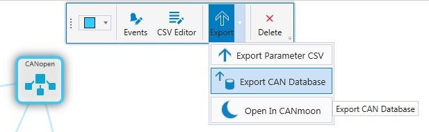
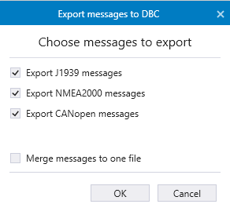

This function exports database(s) to be used, for example, in Epec CANmoon or Vector CANalyzer tool. The database contains all the defined PDO, J1939 and/or NMEA2000 messages in the network, depending on the selections made inthe DBC export window.
The CAN Database files are exported on System Export. .dbc files are generated based on the J1939, NMEA2000, and CANopen protocols in a network. A separate .dbc file is created for each protocol, along with a merged file that includes all the J1939, NMEA2000 and CANopen messages across the entire network.
To manually export a CAN database:
1. Select a network
2. Select Export > Export CAN Database from the hover menu

3. Select messages to be exported and select OK.

4. Select a folder from the file explorer where the DBC(s) will be exported.
If there is only one type of messages in the network, the file explorer opens instead of the export messages window.
To use the exported file in Vector CANalyzer, select Associate database in Vector CANalyzer and browse the exported file. When diagnosing the CAN bus traffic, the variables included in PDOs are displayed with the variable names defined in MultiTool Creator.
To use the exported file in Epec CANmoon, refer to CANmoon manual (software & manual available from Epec's Extranet).
Epec Oy reserves all rights for improvements without prior notice.
Source file 6_8_CANdb_Export.htm
Last updated 25-Jun-2025